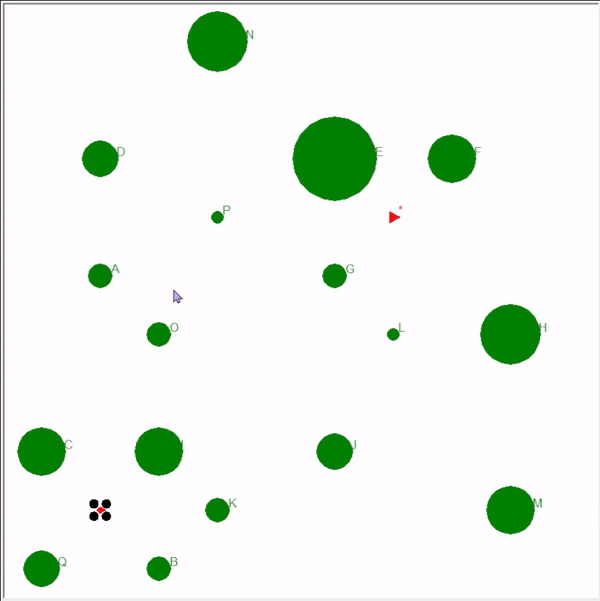

CS7638 – AI for Robotics
Hands-on robotics projects that explored localization, control, mapping, and decision-making strategies to simulate intelligent drone navigation and planning.
Localization System for Autonomous Drone
This project was centered on designing a complete localization system for an autonomous drone, simulating the critical task of enabling a robot to understand where it is in the world using noisy sensor inputs. I integrated sensor fusion techniques, including Kalman and Particle Filters, to estimate position and orientation over time. Through careful tuning and validation, I saw first-hand how filtering helped smooth out noise and recover accurate paths from uncertain data.

PID Controller for Stable Flight
To ensure precise movement and responsiveness in flight, I implemented a Proportional-Integral-Derivative (PID) controller from scratch. Tuning the gains required iteration and intuition—balancing between overshoot and sluggish response. In the end, the drone followed waypoints with tight error margins and stable motion, which felt like a small but proud engineering win.

Graph SLAM for Mapping and Localization
I implemented Graph SLAM (Simultaneous Localization and Mapping), where the drone built a map of its environment while also figuring out its own location. This involved modeling constraints between poses and landmarks and optimizing the resulting graph. Seeing a map emerge from sparse sensor readings felt like unlocking a core skill in robotic intelligence—and highlighted how optimization and perception are deeply connected.
A* Pathfinding and Policy Mapping
Path planning came next. I applied the A* algorithm to compute efficient paths between waypoints, integrating cost maps and heuristics for real-time decision-making. I also implemented value iteration and policy iteration to compute global policy maps—reinforcing how value-based reasoning can complement graph-based planning. It felt rewarding to see the drone plan not just a path, but a policy.
System Integration and Final Delivery
The final system combined all modules—localization, control, SLAM, and planning—into a cohesive navigation stack. It was satisfying to see all the parts come together. Though each piece required different tools and math, building something that simulated intelligent behavior made the project deeply fulfilling. This course helped me appreciate the balance between theory and implementation in robotics—and the importance of iteration when things (inevitably) didn’t work the first time.